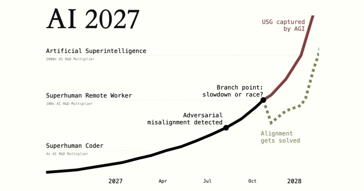
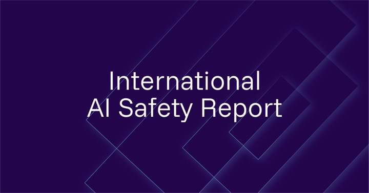

The courses, videos, books and articles that helped us understand where AI is heading and what we can do about it. Most of them are free. Start with whatever fits your time: a video tonight, a course over a few weeks.Die Kurse, Videos, Bücher und Artikel, die uns geholfen haben zu verstehen, wohin sich KI entwickelt und was wir tun können. Die meisten sind kostenlos und auf Englisch. Fang mit dem an, was in Deine Zeit passt: heute Abend ein Video, über ein paar Wochen ein Kurs.
Start hereHier anfangen
Our four recommendationsUnsere vier Empfehlungen
If you only have time for a few things, start with these.Wenn Du nur Zeit für wenig hast, fang hiermit an.

Scenario + videoSzenario + Video
AI 2027
AI Futures Project · AI In Context
How AI could develop over the next few years, month by month. Read the scenario, or watch the 30-minute video that walks through it.Wie sich KI in den nächsten Jahren entwickeln könnte, Monat für Monat. Lies das Szenario oder schau das 30-minütige Video, das es Schritt für Schritt erzählt.
The easiest way into AI safety: a free, self-paced course on where AI is heading, its risks and what is being done about them.Der einfachste Einstieg in KI-Sicherheit: ein kostenloser Kurs im eigenen Tempo dazu, wohin KI sich entwickelt, welche Risiken es gibt und was dagegen getan wird.
Want to work on AI safety yourself? Talk to a career advisor for free and get a plan that fits your background.Du willst selbst an KI-Sicherheit arbeiten? Sprich kostenlos mit einer Karriereberatung und bekomm einen Plan, der zu Deinem Hintergrund passt.
What we read and learn about AI safety, plus first word on our next Sense-Making Evenings in Berlin. Free, no hype.Was wir über KI-Sicherheit lesen und lernen, und Du erfährst als Erstes von den nächsten Sense-Making-Abenden in Berlin. Kostenlos, ohne Hype.
A free, self-paced introduction of about two hours: where AI is heading, its risks and what is being done about them. A good first step without technical background.Eine kostenlose Einführung von etwa zwei Stunden im eigenen Tempo: wohin KI sich entwickelt, welche Risiken es gibt und was dagegen getan wird. Ein guter erster Schritt ohne technisches Vorwissen.
Cohort-based courses on AI safety, alignment and AI governance, with facilitated discussion groups and a strong community.Kurse in Gruppen zu KI-Sicherheit, Alignment und KI-Governance, mit moderierten Diskussionsrunden und einer starken Community.
Open materials for people who want to work hands-on on technical AI safety: interpretability, evaluations and more. Programming experience helps.Offene Materialien für alle, die praktisch an technischer KI-Sicherheit arbeiten wollen: Interpretierbarkeit, Evaluationen und mehr. Programmiererfahrung hilft.
A map of the AI safety field: courses, communities, events, funding and ways to get involved, in one place.Eine Landkarte des Feldes: Kurse, Communitys, Events, Förderung und Wege, sich einzubringen, an einem Ort.
Free one-to-one calls for people who want to use their career to reduce risks from AI, plus an AI career advisor you can try right away.Kostenlose Einzelgespräche für Menschen, die mit ihrer Arbeit Risiken durch KI verringern wollen, dazu ein KI-Karriereberater, den Du sofort ausprobieren kannst.
A clear, visual walk through the AI 2027 scenario: how AI could develop over the next few years and why the people building it worry about losing control.Ein klarer, anschaulicher Gang durch das Szenario AI 2027: wie sich KI in den nächsten Jahren entwickeln könnte und warum sich die Menschen, die sie bauen, Sorgen um einen Kontrollverlust machen.
30 minutes a day can get you a job in AI safetyMit 30 Minuten am Tag in die KI-Sicherheit
Matt Beard, 80,000 Hours
A career advisor's seven steps into AI safety: build context, find your skills, apply, network, build a portfolio, work in public and don't wait for permission.Sieben Schritte eines Karriereberaters in die KI-Sicherheit: Wissen aufbauen, eigene Stärken finden, sich bewerben, Kontakte knüpfen, ein Portfolio aufbauen, öffentlich arbeiten und nicht auf Erlaubnis warten.
The strongest warning in this list: why the authors think superhuman AI built with today's methods would be catastrophic, and what they call for instead.Die deutlichste Warnung in dieser Liste: warum die Autoren glauben, dass übermenschliche KI mit heutigen Methoden katastrophal wäre, und was sie stattdessen fordern.
Book · 2020Buch · 2020
The Alignment Problem
Brian Christian
A readable, human story of how machine learning systems learn the wrong things, and of the researchers trying to make them do what we actually mean.Eine gut lesbare, menschliche Geschichte darüber, wie lernende Systeme das Falsche lernen, und über die Forschenden, die sie dazu bringen wollen, das zu tun, was wir wirklich meinen.
Book · 2019Buch · 2019
Human Compatible
Stuart Russell
One of the authors of the standard AI textbook explains the control problem and proposes AI that stays uncertain about what humans want.Einer der Autoren des Standardlehrbuchs zu KI erklärt das Kontrollproblem und schlägt KI vor, die unsicher bleibt, was Menschen wollen.
Book · 2020Buch · 2020
The Precipice
Toby Ord
A philosopher's careful look at the biggest risks to humanity's future, with unaligned AI near the top, and why protecting future generations matters.Ein Philosoph blickt sorgfältig auf die größten Risiken für die Zukunft der Menschheit, mit nicht ausgerichteter KI weit oben, und darauf, warum der Schutz künftiger Generationen zählt.
Book · 2017Buch · 2017
Life 3.0
Max Tegmark
An accessible tour of possible futures with advanced AI, from the best to the worst, and the choices that lead there.Eine zugängliche Reise durch mögliche Zukünfte mit fortgeschrittener KI, von den besten bis zu den schlimmsten, und durch die Entscheidungen, die dorthin führen.
Book · 2014Buch · 2014
Superintelligence
Nick Bostrom
The book that put the risks of superhuman AI on the map. Dense, but still the foundation many later works build on.Das Buch, das die Risiken übermenschlicher KI bekannt gemacht hat. Anspruchsvoll, aber bis heute die Grundlage, auf der viele spätere Werke aufbauen.
Articles & reportsArtikel & Berichte
Read the evidenceDie Belege lesen

Report · 2026Bericht · 2026
International AI Safety Report
Chaired by Yoshua BengioUnter Leitung von Yoshua Bengio
The shared scientific overview of what advanced AI can do and which risks it brings, written by an international panel of experts for policymakers.Der gemeinsame wissenschaftliche Überblick darüber, was fortgeschrittene KI kann und welche Risiken sie mit sich bringt, geschrieben von einem internationalen Gremium für die Politik.
A month-by-month scenario of how AI could develop in the next few years. It takes today's pace seriously and follows it through, as a structured “what if” to think with.Ein Szenario Monat für Monat, wie sich KI in den nächsten Jahren entwickeln könnte. Es nimmt das heutige Tempo ernst und denkt es zu Ende, als strukturiertes „Was wäre, wenn“ zum Weiterdenken.
The largest survey of AI researchers so far (2,778 respondents). Between 38% and 51% gave at least a 10% chance of outcomes as bad as human extinction.Die bisher größte Umfrage unter KI-Forschenden (2.778 Teilnehmende). Zwischen 38 % und 51 % sehen eine Wahrscheinlichkeit von mindestens 10 % für Folgen so schlimm wie das Aussterben der Menschheit.
One sentence, signed by hundreds of AI scientists and the heads of the leading AI labs: reducing the risk of extinction from AI should be a global priority.Ein Satz, unterschrieben von Hunderten KI-Fachleuten und den Spitzen der führenden KI-Labore: Das Risiko des Aussterbens durch KI zu verringern, sollte eine globale Priorität sein.
11 essential resources on AI risk11 wichtige Ressourcen zum KI-Risiko
80,000 Hours
A short, curated list of the best starting points on AI risk, safety and alignment.Eine kurze, ausgewählte Liste der besten Einstiege zu KI-Risiko, Sicherheit und Alignment.
The written version of the career video above, with all the links to reading lists, fellowships and job boards.Die schriftliche Fassung des Karriere-Videos oben, mit allen Links zu Leselisten, Stipendien und Jobbörsen.
Get new resources firstNeue Ressourcen zuerst erhalten
We share what we read and learn in the AIwareness newsletter, together with our next Sense-Making Evenings.Was wir lesen und lernen, teilen wir im AIwareness-Newsletter, zusammen mit den nächsten Sense-Making-Abenden.
The signup form couldn’t load here, so you can subscribe on Substack instead. It takes a few seconds.Das Formular konnte hier nicht laden. Du kannst Dich direkt auf Substack eintragen, das dauert nur ein paar Sekunden.